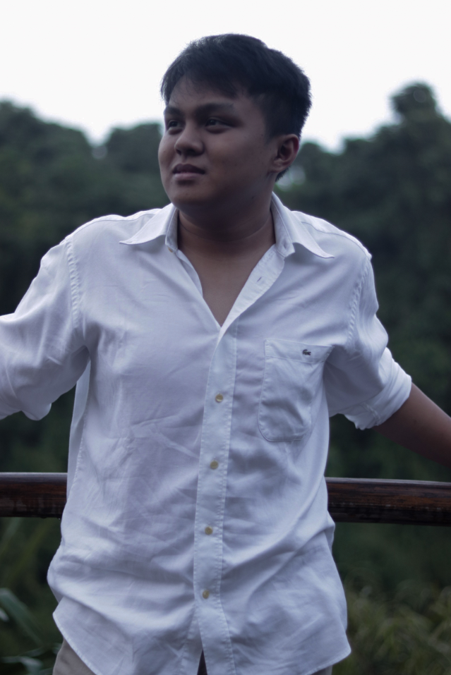
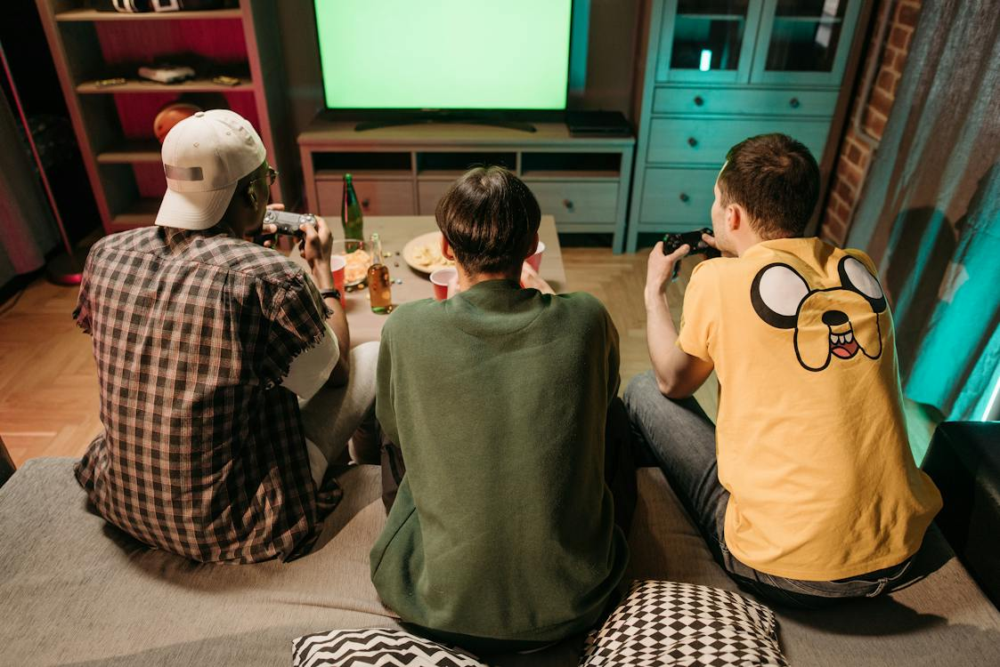

Birthdate: October 11, 2003
Birthplace: Dubai, UAE
Address: 149 Tambo Malaki, Indang, Cavite
Age: 20 years old
School: Cavite State University-Main
Course: BSIT - Irregular 2nd year

HARVEY FABRO SIERRA

Father: Hilario R. Sierra
Proffesion: Travel Agent
Mother: Editha F. Sierra
Profession: X-ray Technician
Brother: Yrrahl Sierra
Occupation: Student (VetMed)

MY HOBBY
Earlier in my life, I used to be active in sports, Basketball and Table Tennis, I used to love these sports with all my heart, the dream of being in the big stage in these sports but things has changed when I injured myself, I dislocated my left knee while playing basketball and after recovery it was never the same. I was scared and maybe traumatized to experienced it again, the feeling that I am scared to do what I want to do. I experieced it countless of times but the pain never changed, so I am always hesistant to do what I think I would do. Today, I like to play video games with my friends such as Valorant, Sports games, CSGO etc. and hang out with them, do memories that will last forever.